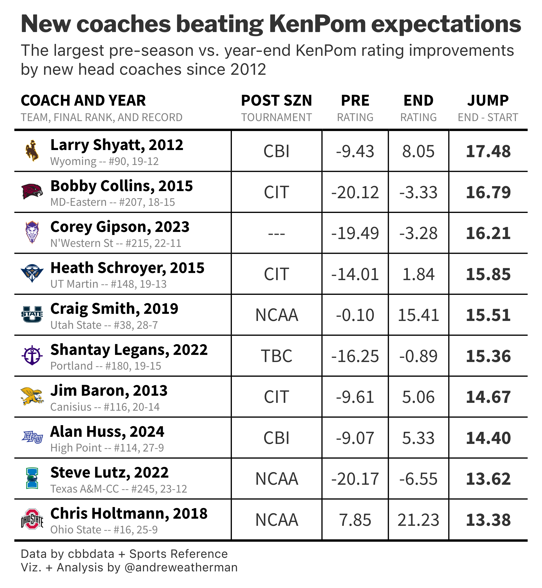

New Coaches vs. KenPom
gt
college basketball
cbbdata
scraping
tutorial
Using custom functions in
gt
The What
We will be making a table that plots preseason vs. final KenPom rating improvements for new head coaches.
Warning
To build this table, you will need an active KenPom subscription and a cbbdata account. Follow these steps to link your KenPom account to cbbdata.
Final Table
The How
For this table, we will need:
The Data
Grab The Data
Coaching Changes
The first thing that we will need is a list of coaching changes by season. There are a few different places from which to grab this, but the most straightforward way is the ‘Coaching Changes’ page at barttorvik.
The data is presented in a static HTML table by year, so we will write a function with rvest and use purrr to loop over needed seasons (2012-2024).
Note
For some reason, the Barttorvik site blocks requests originating from Windows devices. To get around this, we will use withr and set a custom user-agent.
get_coaching_changes <- function(year) {
suppressWarnings({
withr::local_options(HTTPUserAgent='Not Windows')
read_html(glue("https://barttorvik.com/coaching_moves.php?year={year}")) %>%
html_table() %>%
pluck(1) %>%
clean_names() %>%
mutate(year = year) %>%
select(team, year, new_coach)
})
}Now that we have our scraping function, let’s loop over it with map_dfr.
all_changes <- map_dfr(2012:2024, \(year) get_coaching_changes(year))KenPom Ratings
Next, we need preseason and year-end KenPom ratings, which is possible with the cbd_kenpom_ratings_archive function from cbbdata. Specifying adj_em[which.min(date)] will grab the KenPom rating associated with the first observed date (preseason) for each team and year, etc.
Season Record
For some added flair, let’s include team records too.
team_records <- cbd_torvik_game_box() %>%
summarize(
record = glue("{sum(result == 'W')}-{sum(result == 'L')}"),
.by = c(team, year)
)Combine
Finally, let’s combine our data and calculate the rating difference. All join functions in dplyr only work with two data frames. However, we can place everything inside of a list and use reduce.
We’re only going to plot the 10 bets rating jumps.
| team | year | new_coach | start_em | end_em | final_rank | diff | record |
|---|---|---|---|---|---|---|---|
| Wyoming | 2012 | Larry Shyatt | -9.43 | 8.05 | 90 | 17.48 | 19-12 |
| Maryland Eastern Shore | 2015 | Bobby Collins | -20.12 | -3.33 | 207 | 16.79 | 18-15 |
| Northwestern St. | 2023 | Corey Gipson | -19.49 | -3.28 | 215 | 16.21 | 22-11 |
| Tennessee Martin | 2015 | Heath Schroyer | -14.01 | 1.84 | 148 | 15.85 | 19-13 |
| Utah St. | 2019 | Craig Smith | -0.10 | 15.41 | 38 | 15.51 | 28-7 |
| Portland | 2022 | Shantay Legans | -16.25 | -0.89 | 180 | 15.36 | 19-15 |
| Canisius | 2013 | Jim Baron | -9.61 | 5.06 | 116 | 14.67 | 20-14 |
| High Point | 2024 | Alan Huss | -9.07 | 5.33 | 114 | 14.40 | 27-9 |
| Texas A&M Corpus Chris | 2022 | Steve Lutz | -20.17 | -6.55 | 245 | 13.62 | 23-12 |
| Ohio St. | 2018 | Chris Holtmann | 7.85 | 21.23 | 16 | 13.38 | 25-9 |
Postseason Outcome
The final thing that we are going to include is a column on whether or not a team made the postseason (NCAA, NIT, CBI, etc.). The easiest way to do this is to scrape Sports Reference – which is why we’re adding this after we have combined our data and grabbed the 10 largest jumps.
Postseason information can be found on a team’s schedule page for a given season. We can use cbd_teams to grab the needed team slugs.
sr_ids <- cbd_teams() %>% select(team = common_team, sr_link)
grab_schedules <- function(team, year) {
Sys.sleep(3) # sleep for 501
id <- filter(sr_ids, team == !!team)$sr_link
slug <- str_extract(id, "(?<=/schools/)[^/]+(?=/men)") # regex to extract slug
url <- glue("https://www.sports-reference.com/cbb/schools/{slug}/men/{year}-schedule.html")
read_html(url) %>%
html_nodes("#schedule") %>%
html_table() %>%
pluck(1) %>%
clean_names() %>%
slice_tail(n = 1) %>%
select("type") %>%
mutate(team = team, year = year)
}Use purrr to iterate over all teams and combine the data back
| team | year | new_coach | start_em | end_em | final_rank | diff | record | type |
|---|---|---|---|---|---|---|---|---|
| Wyoming | 2012 | Larry Shyatt | -9.43 | 8.05 | 90 | 17.48 | 19-12 | CBI |
| Maryland Eastern Shore | 2015 | Bobby Collins | -20.12 | -3.33 | 207 | 16.79 | 18-15 | CIT |
| Northwestern St. | 2023 | Corey Gipson | -19.49 | -3.28 | 215 | 16.21 | 22-11 | — |
| Tennessee Martin | 2015 | Heath Schroyer | -14.01 | 1.84 | 148 | 15.85 | 19-13 | CIT |
| Utah St. | 2019 | Craig Smith | -0.10 | 15.41 | 38 | 15.51 | 28-7 | NCAA |
| Portland | 2022 | Shantay Legans | -16.25 | -0.89 | 180 | 15.36 | 19-15 | TBC |
| Canisius | 2013 | Jim Baron | -9.61 | 5.06 | 116 | 14.67 | 20-14 | CIT |
| High Point | 2024 | Alan Huss | -9.07 | 5.33 | 114 | 14.40 | 27-9 | CBI |
| Texas A&M Corpus Chris | 2022 | Steve Lutz | -20.17 | -6.55 | 245 | 13.62 | 23-12 | NCAA |
| Ohio St. | 2018 | Chris Holtmann | 7.85 | 21.23 | 16 | 13.38 | 25-9 | NCAA |
The Table
Stack Function
To make things cleaner, here is a function that will plot team logos and stack some additional text to the right using HTML.
gt_cbb_stack <- function(data, upper_text1, upper_text2, lower_text1, lower_text2, lower_text3, logo) {
data %>%
mutate(stack = glue(
"<div style='display: flex; align-items: center;'>
<img src='{eval(expr({{logo}}))}' style='height: auto; width: 20px; padding-right: 5px;'>
<div>
<div style='line-height:14px;'><span style='font-weight:bold;color:black;font-size:14px'>{eval(expr({{upper_text1}}))}, {eval(expr({{upper_text2}}))}</span></div>
<div style='line-height:10px;'><span style='font-weight:plain;color:grey;font-size:10px'>{eval(expr({{lower_text1}}))} -- #{eval(expr({{lower_text2}}))}, {eval(expr({{lower_text3}}))}</span></div>
</div>
</div>"
)
)
}To use this, we need to add a column with team logo links. Then, let’s apply it.
Column Header + Subheader Function
In late January, Todd Whitehead (Synergy) posted a table with cool column headers + subheaders. I really liked this design, which pairs very well with stacked cells, so I created a function to mimic this effect in gt. We’ll use it in our table too.
This function does a few things, but most notably, it creates an HTML string for the “stacked” effect, parses it using htmltools, and then sets it as the header using cols_label.
gt_column_subheaders <- function(gt_table, ...) {
subheaders <- list(...)
all_col_names <- colnames(gt_table[['_data']])
for (col_name in all_col_names) {
subtitle_info <- subheaders[[col_name]] %||% list(subtitle = " ", heading = col_name)
subtitle <- subtitle_info$subtitle
new_header_title <- subtitle_info$heading
label_html <- htmltools::HTML(glue(
"<div style='line-height: 1.05; margin-bottom: -2px;'>
<span style='font-size: 14px; font-weight: bold; color: black;'>{new_header_title}</span>
<br>
<span style='font-size: 10px; font-weight: normal; color: #808080;'>{subtitle}</span>
</div>"
))
gt_table <- gt_table %>%
cols_label(!!sym(col_name) := label_html)
}
gt_table
}1) The Base Table
Honestly, the code below outputs a pretty nice table, but there is definitely some room for improvement.
data %>%
select(stack, type, start_em, end_em, diff) %>%
gt(id = 'table') %>%
gt_theme_nytimes() %>%
fmt_markdown(stack) %>%
cols_move_to_start(stack) %>%
cols_align(columns = stack, 'left') %>%
cols_align(columns = -stack, 'center')2) Applying Custom Column Function
Let’s apply our custom gt_column_subheaders function. To relabel a column, you need to pass a list with heading and subheading.
... %>%
gt_column_subheaders(stack = list(heading = "Coach and Year",
subtitle = "Team, Final Rank, and Record"),
type = list(heading = 'Post SZN',
subtitle = "Tournament"),
start_em = list(heading = 'Pre',
subtitle = "Rating"),
end_em = list(heading = 'End',
subtitle = "Rating"),
diff = list(heading = 'Jump',
subtitle = "End - Start"))3) Table Borders
To give our table some more clarity and definition, we will add some borders around our cells.
... %>%
tab_style(locations = cells_body(columns = c(type, ends_with("em"))), style = cell_borders()) %>%
tab_style(locations = cells_body(columns = -ends_with("em")), style = cell_borders(sides = "bottom")) %>%
tab_style(locations = cells_body(rows = 1), style = cell_borders(sides = "top", weight = px(2))) %>%
tab_style(locations = cells_body(columns = diff), style = cell_text(weight = 'bold')) 4) Table Annotations + Options
Let’s add our title and caption. We will also tweak our caption font size, force the line below the caption to white (not sure why this theme doesn’t do it by default), and compress our rows.
... %>%
tab_options(data_row.padding = 3.5,
source_notes.border.bottom.style = "solid",
source_notes.border.bottom.color = "white",
source_notes.font.size = 10) %>%
tab_header(title = "New coaches beating KenPom expectations",
subtitle = md("The largest pre-season vs. year-end KenPom rating improvements<br>by new head coaches since 2012")) %>%
tab_source_note(md("Data by cbbdata + Sports Reference<br>Viz. + Analysis by @andreweatherman"))5) Additional CSS
Finally, let’s throw in some minor CSS changes. When using opt_css, it is important to reference the same table id that you created in gt(id = …).
The first two lines adjust the padding between the title and subtitles – “squishing” them together.
The third line targets the bottom border of the table. It creates the same effect as the tab_style that targeted the first row (black border at 2px weight).
Complete Script
library(tidyverse)
library(rvest)
library(cbbdata)
library(gt)
library(gtExtras)
library(glue)
library(janitor)
## functions ===
get_coaching_changes <- function(year) {
suppressWarnings({
withr::local_options(HTTPUserAgent='Not Windows')
read_html(glue("https://barttorvik.com/coaching_moves.php?year={year}")) %>%
html_table() %>%
pluck(1) %>%
clean_names() %>%
mutate(year = year) %>%
select(team, year, new_coach)
})
}
grab_schedules <- function(team, year) {
Sys.sleep(3) # sleep for 501
id <- filter(sr_ids, team == !!team)$sr_link
slug <- str_extract(id, "(?<=/schools/)[^/]+(?=/men)") # regex to extract slug
url <- glue("https://www.sports-reference.com/cbb/schools/{slug}/men/{year}-schedule.html")
read_html(url) %>%
html_nodes("#schedule") %>%
html_table() %>%
pluck(1) %>%
clean_names() %>%
slice_tail(n = 1) %>%
select("type") %>%
mutate(team = team, year = year)
}
gt_cbb_stack <- function(data, upper_text1, upper_text2, lower_text1, lower_text2, lower_text3, logo) {
data %>%
mutate(stack = glue(
"<div style='display: flex; align-items: center;'>
<img src='{eval(expr({{logo}}))}' style='height: auto; width: 20px; padding-right: 5px;'>
<div>
<div style='line-height:14px;'><span style='font-weight:bold;color:black;font-size:14px'>{eval(expr({{upper_text1}}))}, {eval(expr({{upper_text2}}))}</span></div>
<div style='line-height:10px;'><span style='font-weight:plain;color:grey;font-size:10px'>{eval(expr({{lower_text1}}))} -- #{eval(expr({{lower_text2}}))}, {eval(expr({{lower_text3}}))}</span></div>
</div>
</div>"
)
)
}
gt_column_subheaders <- function(gt_table, ...) {
subheaders <- list(...)
all_col_names <- colnames(gt_table[['_data']])
for (col_name in all_col_names) {
subtitle_info <- subheaders[[col_name]] %||% list(subtitle = " ", heading = col_name)
subtitle <- subtitle_info$subtitle
new_header_title <- subtitle_info$heading
label_html <- htmltools::HTML(glue(
"<div style='line-height: 1.05; margin-bottom: -2px;'>
<span style='font-size: 14px; font-weight: bold; color: black;'>{new_header_title}</span>
<br>
<span style='font-size: 10px; font-weight: normal; color: #808080;'>{subtitle}</span>
</div>"
))
gt_table <- gt_table %>%
cols_label(!!sym(col_name) := label_html)
}
gt_table
}
## code ===
all_changes <- map_dfr(2012:2024, \(year) get_coaching_changes(year))
archive <- cbd_kenpom_ratings_archive() %>%
filter(year >= 2008) %>%
summarize(
start_em = adj_em[which.min(date)],
end_em = adj_em[which.max(date)],
final_rank = adj_em_rk[which.max(date)],
.by = c(team, year)
) %>%
mutate(diff = end_em - start_em)
team_records <- cbd_torvik_game_box() %>%
summarize(
record = glue("{sum(result == 'W')}-{sum(result == 'L')}"),
.by = c(team, year)
)
data <- list(all_changes, archive, team_records) %>%
reduce(left_join, by = c("team", "year")) %>%
slice_max(diff, n = 10)
sr_ids <- cbd_teams() %>% select(team = common_team, sr_link)
postseason <- map2_dfr(data$team, data$year, \(team, year) grab_schedules(team, year))
data <- left_join(data, postseason, by = c('team', 'year')) %>%
mutate(type = ifelse(type == "CTOURN", "---", type)) %>%
left_join(cbd_teams() %>% select(team = common_team, espn_nickname, logo)) %>%
gt_cbb_stack(new_coach, year, espn_nickname, final_rank, record, logo)
## table ===
table <- data %>%
select(stack, type, start_em, end_em, diff) %>%
gt(id = 'table') %>%
gt_theme_nytimes() %>%
fmt_markdown(stack) %>%
cols_move_to_start(stack) %>%
cols_align(columns = stack, 'left') %>%
cols_align(columns = -stack, 'center') %>%
gt_column_subheaders(stack = list(heading = "Coach and Year",
subtitle = "Team, Final Rank, and Record"),
type = list(heading = 'Post SZN',
subtitle = "Tournament"),
start_em = list(heading = 'Pre',
subtitle = "Rating"),
end_em = list(heading = 'End',
subtitle = "Rating"),
diff = list(heading = 'Jump',
subtitle = "End - Start")) %>%
tab_style(locations = cells_body(columns = c(type, ends_with("em"))), style = cell_borders()) %>%
tab_style(locations = cells_body(columns = -ends_with("em")), style = cell_borders(sides = "bottom")) %>%
tab_style(locations = cells_body(rows = 1), style = cell_borders(sides = "top", weight = px(2))) %>%
tab_style(locations = cells_body(columns = diff), style = cell_text(weight = 'bold')) %>%
tab_options(data_row.padding = 3.5,
source_notes.border.bottom.style = "solid",
source_notes.border.bottom.color = "white",
source_notes.font.size = 10) %>%
tab_header(title = "New coaches beating KenPom expectations",
subtitle = md("The largest pre-season vs. year-end KenPom rating improvements<br>by new head coaches since 2012")) %>%
tab_source_note(md("Data by cbbdata + Sports Reference<br>Viz. + Analysis by @andreweatherman")) %>%
opt_css(
"
#table .gt_heading {
padding-top: 6px;
padding-bottom: 0px;
}
#table .gt_subtitle {
padding-top: 2px;
padding-bottom: 6px;
}
#table tbody tr:last-child {
border-bottom: 2px solid #000000;
}
"
)
## save ===
gtsave_extra(table, "final_table.png", zoom = 5)